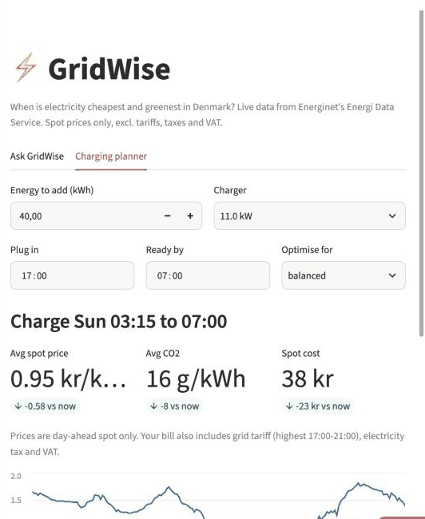

When should I charge my EV tonight?
Turning Energinet's open data into a charging recommendation people can trust, and narrowing the product when the evidence pushed back.
GridWise answers one question for EV owners in Denmark: when should I charge so the car is ready in the morning, at the lowest price and CO2? It reads day-ahead electricity prices and the CO2 forecast from Energinet's open Energi Data Service, finds the best charging window, and compares it with plugging in and charging straight away. A Claude agent answers in plain English or Danish, through an MCP server, but never does the maths itself.
I defined the problem and scope, set the success metrics and roadmap, made and logged the product decisions, ran the desk research, and built and shipped the product. It is a solo project, so every decision and every mistake here is mine.
Try the decision yourself
The GridWise planner, rebuilt in this page and run on real Energinet data for East Denmark, 26 to 27 November 2026. Change the plan and see where the charging window lands.
11 kW charger. Spot price only; grid tariff, tax and VAT come on top. Source: Energi Data Service, DayAheadPrices and CO2EmisProg, DK2.
Context and responsibility
I built GridWise to test a question I keep meeting in AI product work: how far can an agent be trusted when its answer turns into a decision about money? Energy was a natural domain. Denmark publishes unusually good open energy data, and since October 2025 day-ahead prices change every 15 minutes, so the timing problem is real and getting harder.
I owned the whole product end to end: discovery, scope, decisions, data access, the planner, the agent, the app, testing and the launch.
Problem and evidence
Three things decide what charging really costs: the spot price, which moves every 15 minutes; the CO2 intensity of the grid, which moves with the wind; and the grid tariff, which is highest between 17:00 and 21:00. An EV is the biggest flexible load in most homes, but the data needed to time it well sits in an API that almost nobody will ever query.
My starting assumption was that most EV owners plug in when they get home and charge right at the evening peak. Before building more, I tested that against published evidence:
- Behaviour has already shifted. Radius reported that after the 2023 tariff change, EV charging between 17:00 and 21:00 fell below average and night charging rose sharply.
- Most, but not all, households can benefit. About two thirds of Danish electricity agreements were variable-price in 2023, so timing helps most people but not everyone.
- The tariff is often the bigger lever. The Zealand winter tariff is about nine times higher in the evening peak than at night.
- Competitors already automate. Several charger and energy apps schedule charging by price automatically.
- Users respond to prices. A DTU survey of 500 Danish EV owners found most check prices and many will postpone charging by a day or more.
Two of my core assumptions were weaker than I thought. That changed who the product is for: households with a basic charger and no smart charging app, and developers or energy teams who want price and CO2 planning as tools for their own AI agents.
Options and decision
| Option | What it optimised for | Decision |
|---|---|---|
| Let the language model read the price data and recommend a window | The fastest path and the most flexible answers | Rejected. Numbers would not be reproducible or testable, and people act on them with real money. |
| A tested planner behind MCP tools, with the model explaining the result Chosen | Trust, testability, and tools other agents can reuse | Chosen. The model picks the tool and explains; the planner calculates; every tool call is shown to the user. |
| Control the charger directly | The most value per user, with no action needed | Not now. It needs charger integrations and earned trust first, and existing apps already do it for smart chargers. |
Keeping the maths out of the model is the decision everything else rests on. It also meant the planner could work on its own, so anyone can try the product without an AI key, and the value is clearly in the planner, not the chat.
What I deliberately did not build
- Grid tariffs, tax and VAT. v0.1 uses spot price only, and every answer says so. All-in pricing is first on the roadmap.
- Charger control and notifications. Advice first; automation only once the recommendation is trusted.
- Accounts and history. One question answered well needs none of it.
Trade-offs
- Spot price only: a working, honest loop sooner, but savings differ from the real bill near the tariff peak.
- One continuous charging window: easy to act on and how chargers schedule, but it leaves a small saving on the table some nights.
- A balanced price and CO2 score: simple and explainable, but relative. On a day with little CO2 variation, CO2 still gets half the weight.
- Stating defaults instead of asking (40 kWh, 11 kW, East Denmark): one useful answer beats a round of questions, and the answer says what it assumed.
Execution
GridWise is a small Python product: an Energi Data Service client, a deterministic charging planner, an MCP server exposing three tools (prices, CO2 forecast and a charging plan), a Claude agent that discovers those tools at runtime, and a Streamlit app with a chat tab and a planner tab that works without AI. It uses the 15-minute DayAheadPrices dataset rather than the older hourly one most tutorials still use, which stopped in September 2025.

22 automated tests cover the planner, the data client, the MCP server end to end and the agent loop, and they run on every push.
Result and limits
The first live run surfaced two problems that no test had caught.
The data provider changed its rules. Energinet had introduced per-dataset rate limits, and the app was blocked within seconds. I redesigned data access the same day: one call per dataset instead of one per day, a 15-minute cache, and respecting the provider's requested wait time.
A correct answer can still mislead. Before the next day's prices are published, around 13:00, the planner recommended the best slot of the evening, which is the peak. It now says clearly what it can and cannot see yet.
GridWise is live, with ten product decisions logged and a public roadmap. Its limits are just as clear: it has no users yet, so the success metrics are a plan rather than results, and its savings are spot-price savings, not bill savings.
How I would measure success: saving per charging session against charging straight away, in kroner and kg CO2. It measures value to the user, not time in the app. The guardrail is that every number in an answer comes from a tool call.
Learning
Scoping to one job made every later decision easier. Keeping the maths out of the model made the AI part trustworthy. And the most useful product work happened after launch, when real data and published evidence pushed back on assumptions I had treated as facts.
Next: all-in prices with grid tariffs, interviews with EV owners in the narrowed segment, and an evaluation set of labelled questions for the agent.
Evidence note
The research here is desk research from published sources (Radius, Green Power Denmark, Bolius, a DTU study and competitor apps), not user interviews; those are planned. The example answer in the repository README uses a bundled sample day, while the screenshot above is from live data. Sources are listed in the desk research, and every decision is in the decision log.